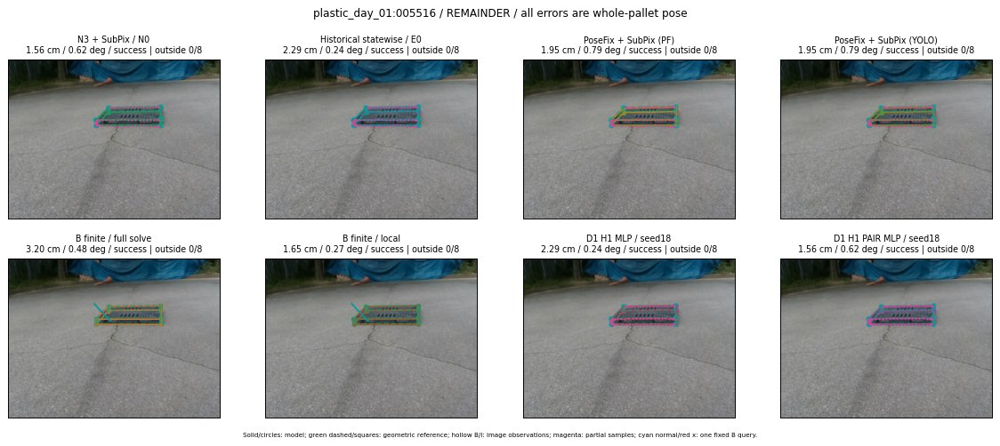

Whole-pallet pose errors; reference is a fixed geometric annotation, not certified physical GT.

Scores are uncalibrated logits. N0 retention is a numerical pose alias; it differs from H0 none or B fallback. B/I and profiles in baseline/B panels are original observations; L panels use new D1 observations. Only one deterministic supported B query is shown in a thumbnail; full support counts are below. Grey privacy rectangles edit the display copy only and are unrelated to O states; all observations were measured on original pixels. Thumbnails use JPEG quality85; detailed scientific panels are PNG.
| Method | Whole pose / cm, deg | Actual source | Selected ID | Score | Archived candidates | Eligible | N0 retained | H0 none | Fallback | Finite profiles |
|---|---|---|---|---|---|---|---|---|---|---|
| Raw YOLO + F | 11.61 cm / 0.92 deg / failure | OTHER | None | N/A | N/A | N/A | False | N/A | None | N/A |
| N3 + SubPix / N0 | 1.56 cm / 0.62 deg / success | N0 | None | N/A | N/A | N/A | True | N/A | None | N/A |
| Historical statewise / E0 | 2.29 cm / 0.24 deg / success | E0_REGENERATED | None | N/A | N/A | N/A | False | N/A | False | N/A |
| PoseFix raw | 10.66 cm / 0.59 deg / failure | OTHER | None | N/A | N/A | N/A | False | N/A | None | N/A |
| PoseFix + SubPix (PF) | 1.95 cm / 0.79 deg / success | OTHER | None | N/A | N/A | N/A | False | N/A | False | historical support records 9; finite audit N/A |
| PoseFix + SubPix (YOLO) | 1.95 cm / 0.79 deg / success | OTHER | None | N/A | N/A | N/A | False | N/A | False | historical support records 9; finite audit N/A |
| Historical L, seed18 | 2.29 cm / 0.24 deg / success | OTHER | NEW/A/SWAPPED_WD/h3/G13/SWAPPED_WD/sample/3/PROPOSED_NATIVE_YAW_3 | N/A | 69 | 68 | False | False | False | N/A |
| Historical B fixed bank | 2.29 cm / 0.24 deg / success | OTHER | LOGGED/G13/ORIGINAL_WD/outline_consider/37 | N/A | N/A | N/A | False | N/A | False | N/A |
| Historical B full | 3.19 cm / 0.52 deg / success | OTHER | NEW/B/ORIGINAL_WD/h0/LOGGED/G13/ORIGINAL_WD/outline_consider/43/PROPOSED_NATIVE_YAW_0 | N/A | N/A | N/A | False | N/A | False | N/A |
| Historical edge full | 2.48 cm / 0.80 deg / success | OTHER | NEW/edge/ORIGINAL_WD/h0/LOGGED/G13/ORIGINAL_WD/outline_consider/43/PROPOSED_NATIVE_YAW_0 | N/A | N/A | N/A | False | N/A | False | N/A |
| Historical AB full | 3.19 cm / 0.54 deg / success | OTHER | NEW/AB/ORIGINAL_WD/h0/LOGGED/G13/ORIGINAL_WD/outline_consider/43/PROPOSED_NATIVE_YAW_0 | N/A | N/A | N/A | False | N/A | False | N/A |
| B finite / fixed bank | 2.29 cm / 0.24 deg / success | OTHER | LOGGED/G13/ORIGINAL_WD/outline_consider/37 | N/A | N/A | N/A | False | N/A | False | 35/35 |
| B finite / full solve | 3.20 cm / 0.48 deg / success | OTHER | NEW_FINITE/B/ORIGINAL_WD/h0/LOGGED/G13/ORIGINAL_WD/outline_consider/43/PROPOSED_NATIVE_YAW_0 | N/A | N/A | N/A | False | N/A | False | 35/35 |
| B finite / local | 1.65 cm / 0.27 deg / success | OTHER | NEW_FINITE/B/ORIGINAL_WD/h0/N0_LOCAL_SAME_PHYSICAL_POSE/ORIGINAL_WD | N/A | N/A | N/A | False | N/A | False | 35/35 |
| Edge finite / full solve | 2.48 cm / 0.80 deg / success | OTHER | NEW_FINITE/edge/ORIGINAL_WD/h0/LOGGED/G13/ORIGINAL_WD/outline_consider/43/PROPOSED_NATIVE_YAW_0 | N/A | N/A | N/A | False | N/A | False | 35/35 |
| D0 H0 MLP / seed18 | 1.56 cm / 0.62 deg / success | N0 | N0 | 3.8922691345214844 | 40 | 39 | True | True | True | N/A |
| D0 H0 MLP / seed19 | 1.56 cm / 0.62 deg / success | N0 | N0 | 3.5343518257141113 | 40 | 39 | True | True | True | N/A |
| D0 H0 MLP / seed20 | 1.56 cm / 0.62 deg / success | N0 | N0 | 0.8749444484710693 | 40 | 39 | True | True | True | N/A |
| D0 H1 MLP / seed18 | 2.29 cm / 0.24 deg / success | OTHER | G13/ORIGINAL_WD/endpoint/37 | -0.0016609281301498413 | 40 | 39 | False | False | False | N/A |
| D0 H1 MLP / seed19 | 2.29 cm / 0.24 deg / success | OTHER | G13/ORIGINAL_WD/endpoint/37 | -0.3163016438484192 | 40 | 39 | False | False | False | N/A |
| D0 H1 MLP / seed20 | 2.29 cm / 0.24 deg / success | OTHER | G13/ORIGINAL_WD/endpoint/37 | -0.9977548718452454 | 40 | 39 | False | False | False | N/A |
| D1 H0 MLP / seed18 | 1.56 cm / 0.62 deg / success | N0 | N0 | 8.376832962036133 | 40 | 39 | True | True | True | N/A |
| D1 H0 MLP / seed19 | 1.56 cm / 0.62 deg / success | N0 | N0 | 7.982320785522461 | 40 | 39 | True | True | True | N/A |
| D1 H0 MLP / seed20 | 1.56 cm / 0.62 deg / success | N0 | N0 | 7.087113857269287 | 40 | 39 | True | True | True | N/A |
| D1 H1 MLP / seed18 | 2.29 cm / 0.24 deg / success | OTHER | G13/ORIGINAL_WD/endpoint/37 | 0.7185055017471313 | 40 | 39 | False | False | False | N/A |
| D1 H1 MLP / seed19 | 2.29 cm / 0.24 deg / success | OTHER | G13/ORIGINAL_WD/endpoint/37 | 0.5195478796958923 | 40 | 39 | False | False | False | N/A |
| D1 H1 MLP / seed20 | 2.29 cm / 0.24 deg / success | OTHER | G13/ORIGINAL_WD/endpoint/37 | -0.030696183443069458 | 40 | 39 | False | False | False | N/A |
| D1 H1 ROLE AFFINE / seed18 | 2.29 cm / 0.24 deg / success | OTHER | G13/ORIGINAL_WD/endpoint/37 | 0.8265962600708008 | 40 | 39 | False | False | False | N/A |
| D1 H1 ROLE AFFINE / seed19 | 2.29 cm / 0.24 deg / success | OTHER | G13/ORIGINAL_WD/endpoint/37 | 0.1721559315919876 | 40 | 39 | False | False | False | N/A |
| D1 H1 ROLE AFFINE / seed20 | 2.29 cm / 0.24 deg / success | OTHER | G13/ORIGINAL_WD/endpoint/37 | 0.2976551353931427 | 40 | 39 | False | False | False | N/A |
| D1 H1 PAIR MLP / seed18 | 1.56 cm / 0.62 deg / success | N0 | N0 | -0.6115550994873047 | 40 | 2 | True | False | False | N/A |
| D1 H1 PAIR MLP / seed19 | 1.56 cm / 0.62 deg / success | N0 | N0 | -0.25108465552330017 | 40 | 2 | True | False | False | N/A |
| D1 H1 PAIR MLP / seed20 | 1.56 cm / 0.62 deg / success | N0 | N0 | 0.2875923812389374 | 40 | 2 | True | False | False | N/A |
| D1 H1 PAIR ROLE AFFINE / seed18 | 2.29 cm / 0.24 deg / success | E0_REGENERATED | E0_REGENERATED | 0.15238869190216064 | 40 | 2 | False | False | False | N/A |
| D1 H1 PAIR ROLE AFFINE / seed19 | 2.29 cm / 0.24 deg / success | E0_REGENERATED | E0_REGENERATED | 0.1687314212322235 | 40 | 2 | False | False | False | N/A |
| D1 H1 PAIR ROLE AFFINE / seed20 | 2.29 cm / 0.24 deg / success | E0_REGENERATED | E0_REGENERATED | 0.21081537008285522 | 40 | 2 | False | False | False | N/A |
| Regenerated common E0 | 2.29 cm / 0.24 deg / success | E0_REGENERATED | E0_REGENERATED | N/A | N/A | N/A | False | N/A | False | N/A |